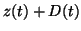
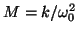
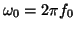
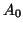
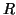
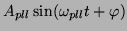
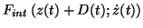

The dynamics of the cantilever is giverned by the following equation of motion:

as shown in Fig. 7.Various terms in the above equation have the following meaning:

is the effective cantilever mass, where
is the resonance frequency of the free cantilever; in addition, there is also a friction term in the LHS containing the dimensionless quality factor ; these are all intrinsic parameters of the probe.
. The first factor in the excitation amplitude
is called a damping or dissipation term and is considered in section 2.1.2 in more detail. It's just a variable gain. Note that the other part of the signal,
, is produced by the PLL as described in more detail in sections 2.1.2 and 2.1.3. It drives the piezo of the cantilever.
corresponds to the conservative and dissipative interactions between the tip and the surface (the latter is not implemented presently).